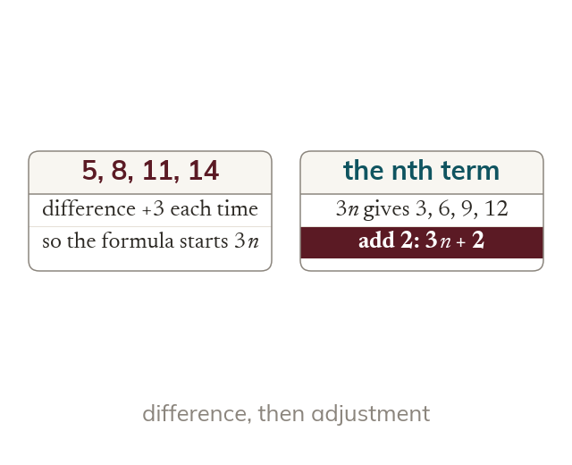
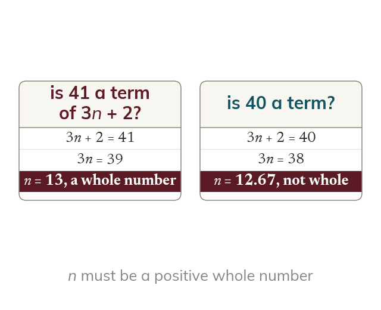
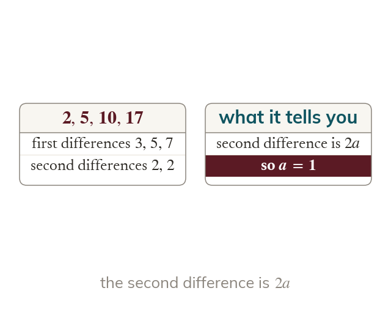
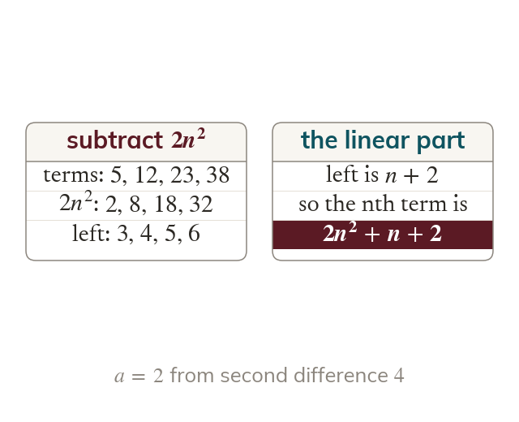

Chapter 4 · Equations, inequalities and sequences · Lesson 8 of 10
Linear and Quadratic nth Terms
A formula for the nth term lets you jump straight to the 100th term, or to the term that equals a target, without writing out the list, and the same difference method reaches quadratic sequences too.
By the end you’ll know…
A linear sequence has nth term an + with a constant first difference.
A quadratic sequence has nth term + bn + with a constant second difference equal to
By the end you can
G6Find terms from an nth-term formula and form an equation in to find which term meets a given condition, rejecting invalid values of
G8Find the nth term of a linear sequence, and of a quadratic sequence using second differences.
Work down the page at your own pace. Write every answer in your book first, then click to check it.
01
Do Now
About 5 minutes
1
If the nth term of a sequence is find the 5th term.
Remember these?
LAST LESSONProve that the sum of any two odd numbers is even.
a multiple of
LAST WEEKSimplify
LAST TERMWhy are histogram bar heights frequency densities, not frequencies?
Class widths differ - area, not height, shows frequency.
LAST YEARFind the magnitude of .
02
Learn
Read each card, then follow the worked examples one step at a time.

A linear nth term
The common difference is the coefficient of Comparing with the terms shows what to add.
The common difference is the coefficient of so a difference of starts the formula with Comparing with the terms shows what to add on.

Testing a term
Setting the nth term equal to the number gives n. The number is a term only if n is a positive whole number.
To test whether a number is in a sequence, set the nth term equal to it and solve for The number is a term only if comes out as a positive whole number.
The nth term from a pattern
WORKED EXAMPLE A
Find the nth term of ...
The common difference is the coefficient of n.
The difference is so the nth term starts
gives and the terms are more
The nth term is
WORKED EXAMPLE B
The nth term is Which term is and is a term?
Setting the formula equal to the number gives n, which must be a whole number.
Set equal to
So is the 20th term
For gives not whole, so is not a term
YOUR TURN · a
Find the nth term of ...
The difference is so start with gives and the terms are more, so the nth term is
YOUR TURN · b
The nth term is Which term is and is a term?
Hint. Follow the worked example: Set equal to → For
gives so and is the 17th term. For :, so is not a term.
03
Check your understanding
Pick an answer. If it's wrong, the feedback tells you which mistake it was.
Which statement about nth terms is correct?
Not quite. The second difference is so a is half of it.
Not quite. A constant second difference means a quadratic nth term.
Not quite. The coefficient of n is the common difference, and the constant is found by comparing.
Yes. A constant first difference gives a linear sequence with nth term an +
Find the nth term of ...
Not quite. The difference is the coefficient of n.
Not quite. The terms are more than so add
Yes. gives and the terms are more.
Not quite. gives The terms are more, so the constant is
The nth term is Is a term?
Not quite. Terms are specific positions. is not equal to any of them.
Not quite. A position must be a whole number, so means is not a term.
Yes. gives which is not a position in the sequence.
Not quite. is positive. The problem is that it is not whole.
04
Practise
mark as you go
Checkpoint. ...Show your teacher before you go on
1.
Find the nth term.
2.
Which term equals ?
so : the 20th
3.
Is a term?
gives not a whole number, so no.
From your textbook
Section Sequences Exercise questions that find terms from an nth-term formula and find which term meets a condition.
05
Learn
Read each card, then follow the worked examples one step at a time.

Second differences
In a quadratic sequence, the second differences are constant. The second difference equals So a is half of the second difference.
In a quadratic sequence the first differences change but the second differences are constant, and the second difference equals So a is half of the second difference.

The full method
Subtracting leaves a linear sequence. That gives the rest of the formula. Check with the first two terms.
Subtract the terms from the sequence and the leftover is linear, which gives the rest of the formula. Check the formula with the first two terms.
WORKED EXAMPLE C
Find the nth term of ...
Find a from the second difference, then subtract the terms.
First differences second differences so and
Subtract from the terms
The nth term is
WORKED EXAMPLE D
Find the nth term of ...
The leftover after subtracting terms is itself a linear sequence.
Second differences are so
Subtract which is
The nth term is
YOUR TURN · c
Find the nth term of ...
Hint. Follow the worked example: Subtract from the terms
First differences and second differences so Subtract : which is The nth term is
YOUR TURN · d
Find the nth term of ...
Hint. Follow the worked example: Subtract
Second differences are so Subtract : The nth term is
06
Check your understanding
Pick an answer. If it's wrong, the feedback tells you which mistake it was.
A quadratic sequence has a constant second difference of What is a?
Not quite. The second difference is so halve it.
Not quite. The second difference is so
Not quite. The second difference is so
Yes. gives
Find the nth term of ...
Not quite. gives and the leftover is
Not quite. The second difference is so not
Yes. Second difference gives and the leftover is
Not quite. The leftover is not constant. It is
Find the nth term of ...
Yes. and the leftover is
Not quite. The leftover is not a constant
Not quite. The leftover changes by each time, so it has an n term.
Not quite. The second difference means
07
Practise
mark as you go
Checkpoint. ...Show your teacher before you go on
1.
Find the nth term.
Hint. Follow the worked example: Subtract from the terms
Second difference so :, nth term
2.
Find the 10th term.
Hint. Follow the worked example: Subtract from the terms
From your textbook
Section Sequences Exercise questions that find the nth term of linear sequences and of quadratic sequences using second differences.
08
Exit ticket
On paper, on your own, then check
1
State what is true about the second differences of a quadratic sequence.
They are constant. The second difference is so a is half of it.
2
Find the nth term of ...
The difference is so start with gives so add nth term
3
Find the nth term of ...
Second difference so Subtract : which is nth term
Finished? Next lesson: 4.9 Limiting Value of a Sequence.
09
How did it go?
Be honest: it's just for you
For each skill, tap the one that is true for you today. Your Revise pages start with anything you mark Not yet.
Find terms from an nth-term formula and form an equation in to find which term meets a given condition, rejecting invalid values of
Find the nth term of a linear sequence, and of a quadratic sequence using second differences.
Your ratings are saved on this device only.
Practise more
After the lesson, or whenever you want more
Dr Frost
Log in, then search for a code to practise that skill.
205aDetermine the nth term formula for an arithmetic sequence by comparison to an
369hDetermine the nth term formula of a quadratic sequence in the form